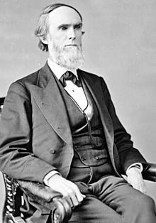

John Scott
1824-1896
From Wikipedia, the free encyclopedia
 John Scott (July 24, 1824 – November 29, 1896) was an American lawyer and Republican party politician. He served in the Pennsylvania House of Representatives and represented Pennsylvania in the United States Senate. He was born in Alexandria, Huntingdon County, Pennsylvania, John Scott attended Marshall College in Chambersburg, Pennsylvania. He practiced law in Huntingdon from 1846 to 1869. He was a prosecuting attorney from 1846 to 1849. He was a member of the revenue commission in 1851. He was a member of the Pennsylvania State House of Representatives in 1862. Scott was elected as a Republican to the United States Senate in 1869, and in 1870 convened a Congressional Inquiry into the atrocities of the Ku Klux Klan, but was not a candidate for reelection in 1875. He served as Chairman of the United States Senate Committee on Claims during the Forty-third Congress. He moved to Pittsburgh in 1875, and served as general counsel of the Pennsylvania Railroad from 1875 to 1877 and general solicitor from 1877 to 1895. John Scott's father, also named John Scott, served in the U.S. House. Scott's mother Agnes is the namesake of Agnes Scott College in Decatur Georgia. He died on November 29, 1896 in Philadelphia, Pennsylvania and is interred at The Woodlands Cemetery.